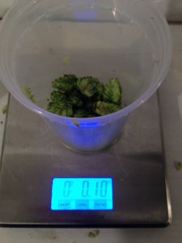
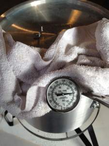
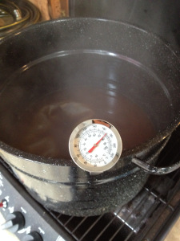
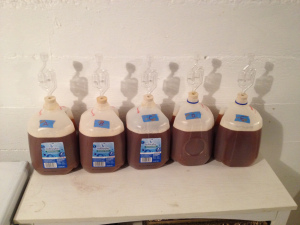

Abstract
In a previous episode known as Hop Stand Experiment #1, four hop stands were held at various temperatures for an hour each to determine an "optimal" temperature for a hop stand. (The hop additions were made when target temperature had been reached.) That experiment yielded a surprising result: the hop-stand batches did not have more of what I consider a standard hops flavor, but were fuller-bodied and/or somewhat "sweeter" than the non-hop-stand (control) batch. I had a consistent preference for a hop stand at 170°F (76.7°C), but the flavor effects were unexpected.
The current experiment tried to figure out what is causing the fuller-bodied flavor resulting from a hop stand. These results were more difficult to interpret, compared with the earlier experiment. That being said, I now believe that adding hops at below-boiling temperatures in a hop stand for one hour has a small impact on hop flavor (a sweet/crisp flavor when using Cascade and Citra hops), and that non-enzymatic browning during a hop stand has a small but noticeable impact on body/fullness. The combination of hops and non-enzymatic browning is probably what results in the small but distinctive change in flavor and body that I described in Experiment #1 as "sweeter" and "more full". The hop-flavor benefits of a hop stand may also be masked by the contribution of late-addition hops.
In short, if you want to maximize hops flavor, it may be better to skip the hop stand and use those hops instead as late additions. If you want more fullness/body, then either a hop stand or a "hopless" stand at 170°F (76.7°C) for 1 hour should provide that. A follow-up experiment shows that it's beneficial to add hops at flameout and then cool to the target temperature for shorter periods of time (e.g. 10 minutes) in order to get hop flavor. I've also created a summary blog post that describes the techniques I've found to be useful at maximizing hop flavor and aroma.
Approach
This experiment used five conditions to determine what causes fuller flavor in beer made using a hop stand. The baseline condition (condition A) was a hop stand with ~0.50 oz of hops per gallon (14 g in 3.78 liters), held at 170°F (76.7°C) for 1 hour, covered.
To determine if higher gravity (caused by more evaporation at higher temperatures in an uncovered stand) is the cause of fuller flavor, condition B was a hop stand with the same amount of hops, held at 170°F (76.7°C) for 1 hour, covered for the first 30 minutes and uncovered for the second 30 minutes. If condition B has fuller-bodied flavor than condition A, then increased gravity can be considered at least part of the contribution.
To determine if the fuller flavor is caused not by the hops at all, but by non-enzymatic browning of the wort during the stand, condition C was a "hop" stand held at 170°F (76.7°C) for 1 hour, covered, but with no hops actually added during the stand. In other words, a hopless stand. If condition C is nearly equivalent to condition A, then non-enzymatic browning can be considered a significant factor. One can also determine how much of an impact the hops in a hop stand is having on hop flavor... in Experiment #1, I found none of the hops/citrus flavor I was expecting, but if A has more hops flavor than C, that would indicate that the hops are contributing something. And if A doesn't have more hops flavor than C, it means that a "hopless" stand is just as effective as a regular hop stand.
To determine if the hop stand simply accentuates other flavors present in the wort, condition D had ~0.1 oz (2.8 g) hops per condition added at the last five minutes of the boil, followed by a hop stand with ~0.5 oz hops per gallon (14 g in 3.78 liters), held at 170°F (76.7°C) for 1 hour, covered. This was then compared with condition E, which also had ~0.1 oz (2.8 g) hops per condition added at the last five minutes of the boil, but no hop stand. If the hop stand accentuates other flavors (such as the late hopping), then condition D will have much more of the expected hops flavor than condition E, in addition to having a fuller-bodied flavor.
Finally, as a set of "sanity checks", condition D should also have more hops flavor than condition A due to the late hopping, but the same full bodied-flavor. Condition E should have more hops flavor than condition A, but less full-bodied flavor than condition A. E may or may not have less body than C, depending on whether the full-bodied flavor is caused by non-enzymatic browning and/or the hops in a hop stand. E should have more hops flavor than C, due to the addition of hops late in the boil.
Methods
Preparing the Batches
The general methods used were similar to the previous experiment. A very simple recipe of Briess liquid malt extract, Cascade hops (7.37% AA) for 60 minutes, and Safale US-05 yeast was used. (See detailed recipe below). The idea was to keep things as simple and as replicable as possible, with focus on the hop stand. The volume of the wort at the end of the boil was 6.5 G (24.6 liters). The goal was to end up with more than 1 G (3.78 liters) per condition, and to ferment only 3¼ quarts (3.0 liters), as it's better to throw wort away (including settled trub) than to not have enough. The 3¼ quarts (3.0 liters) left plenty of head room for fermentation; next time I might increase it to 3½ quarts (3.3 liters) per condition.
The initial hops were separated into two mesh bags of 1.65 oz (46.8 g) (3/5 of total hops weight) and 1.10 oz (31.2 g) (2/5 of total hops weight) each, with both added at the beginning of the boil. After somewhat less than 55 minutes, both bags were removed, the wort was stirred, and 2/5 of the wort (2.6 G, 9.8 liters) was put in a separate pot. The 1.65 oz (46.8 g) was added back to the remaining 3/5 wort (3.9 G, 14.8 liters) and brought back to a boil for 5 minutes, followed by rapid cooling to 75°F (24°C). The 1.10 oz (31.2 g) was then added to the 2/5 wort, along with a total of 0.2 oz (5.67 g) of Cascade (0.1 oz (2.83 g) per condition, or about 0.077 oz per gallon (0.577 g/liter)), and this was brought to a boil for 5 minutes, followed by rapid cooling to 75°F (24°C). The 2/5 wort will yield a somewhat more bitter beer, but the expected difference of 2 IBUs should be below the just-noticeable difference (JND) of 5 IBUs (Palmer, p. 56).
At this point, condition E was finished (a late hop addition followed by no hop stand), and so the wort was stirred and 1.3 G (4.92 liters) of the 2/5 wort was set aside in a covered, sanitized container.
1.3 G (4.92 liters) of the 3/5 wort was put in one pot for condition A, and 1.3 G (4.92 liters) of the same 3/5 wort was put in another pot for condition B. Both pots were brought to 170°F (76.7°C), and 0.30 oz of Cascade and 0.30 oz of Citra (8.5 grams each) were added to each pot. (That would correspond to 3 oz in a full 5-gallon batch, or 85 grams in 19 liters.) The temperature of 170°F (76.7°C) was maintained as closely as possible. This ended up being a range from ~166°F (74.4°C) to ~175°F (79.4°C) for all conditions, but most of the time temperatures were within a few degrees of the target. The first pot remained covered for the duration of the 1-hour stand. The second pot was covered for the first 30 minutes, and then uncovered for the remainder. At the end of the hour, both were cooled to 75°F (24°C) and stored in sanitized 1-G (4-liter) containers (a.k.a. plastic milk jugs).
The final 1.3 G (4.92 liters) of the 3/5 wort was then added to one pot for condition C, and the remaining 1.3 G (4.92 liters) of the 2/5 wort was added to a second pot for condition D. Both pots were brought to 170°F (76.7°C), and 0.30 oz of Cascade and 0.30 oz of Citra were added to the pot (17 g total) with condition D. The target temperature was maintained as closely as possible, and both pots remained covered for the duration of the 1-hour stand. At the end of the hour, both were cooled to 75°F (24°C) and stored in sanitized 1-G (4-liter) containers.
Approximately 0.53 oz (15 g) of Safale US-05 yeast (package age 7 months) was added to 0.6 cups (142 ml) of 80°F (27°C) water and let sit for 15 to 20 minutes. The containers with the five conditions were each aerated by vigorous shaking. The yeast slurry was then divided equally among the 5 conditions, mixed further, and airlocks were applied. Fermentation and conditioning proceeded for 3 weeks at around 65°F (18°C). After priming with 2.40 oz (68 g) of sucrose (0.48 oz (13.6 g) per condition, to yield 2.12 volumes CO2) and bottling, bottle conditioning took another 3 weeks at around 65°F (18°C). The yield was 8 12-oz bottles per condition.
| condition A | condition B | condition C | condition D | condition E | |
| Original Gravity | 1.060 | 1.063 | 1.062 | 1.061 | 1.060 |
| Minimum Stand Temp | 166°F (74.4°C) | 166°F (74.4°C) | 166°F (74.4°C) | 168°F (75.6°C) | N/A |
| Maximum Stand Temp | 174°F (78.9°C) | 175°F (79.4°C) | 174°F (78.9°C) | 175°F (79.4°C) | N/A |
| Final Gravity | 1.014 | 1.016 | 1.015 | 1.015 | 1.014 |
From the measured original gravity of each condition, I suspect that the OG was about 1.061 for all four batches without hop-stand evaporation, and ~1.063 for the batch with evaporation. This would translate to an error of ±0.001 in my specific gravity measurements, which is in line with the first experiment and, in my opinion, a reasonable degree of accuracy. (I've since bought a hydrometer with a longer stem that's easier to read, and I've been much happier with my more recent readings.) The final gravity was around 1.014 or 1.015 for all batches except B, which as expected had a slightly higher FG (1.016). (All gravity readings have been corrected to the hydrometer reference of 68°F/20°C.) This final gravity was higher than that of the previous experiment. At this point, I think that the high FG was due to insufficient aeration prior to pitching the yeast. (Next time, I'll be more diligent with shaking and aerating the containers.) At any rate, the beer tasted fine, the carbonation level after bottle conditioning was as expected, and all conditions were treated equally, so I think the higher FG is acceptable.
Recipe
The following table is for the full batch. Each item ended up separated into 5 equal portions.
| Amount | Ingredient | Notes |
| 10¼ lbs (4.65 kg) | Briess Light LME | Added to 6.7 G (25 l) of water to yield 7.6 G (29 l) of wort. After boil, volume was 6.5 G (25 l), with OG 1.061. |
| 2¾ oz (78 g) | Cascade whole hops, 7.37% AA | added at 60 min. to yield 68 IBU according to the Tinseth formula, or a bitterness ratio of 1.12. |
| 0.53 oz (15 g) | Safale US-05 dry yeast | age 7 months, yielding ~0.75 million cells per ml and °P. |
| 2.40 oz (68 g) | sucrose | to yield 2.12 volumes CO2. |
| condition A | condition B | condition C | condition D | condition E | |
| Late Hopping: | N/A | N/A | N/A | 0.10 oz (2.8 g) Cascade | 0.10 oz (2.8 g) Cascade |
| Hop Stand: | 0.30 oz (8.5 g) Cascade, 0.30 oz (8.5 g) Citra |
0.30 oz (8.5 g) Cascade, 0.30 oz (8.5 g) Citra |
no hops | 0.30 oz (8.5 g) Cascade, 0.30 oz (8.5 g) Citra |
N/A |
Comparing the Batches
Over the period of about one month (beginning three weeks after bottling), I did a series of pairwise comparisons of different batches. Each comparison tried to answer the two questions "which has a fuller-bodied flavor?" and "which has more hops flavor?" I had enough bottles to test twice all of the comparisons described above and summarized below. (I was able to test the D/E comparison four times.) I did the taste comparisons starting out knowing which condition was in each glass. As I continued drinking both, I usually then tried a semi-blind tasting (shuffling the labeled glasses around and waiting a few minutes until I forgot which was which). In the case of subtle differences in flavor (which happened often in this experiment), I waited for the beer to become warmer and flatter. I often took a sip of water between tastes to clear my palate.
Pretty Pictures
Everything is better with illustrations. Here are some pictures of the process:
 Here is 0.10 oz (2.8 g) of Cascade hops. It's a small amount! This ended up being 0.20 oz (5.7 g) for the combination of conditions D and E.
 Here's Condition A, pretty close to 170°F (76.7°C).
 And here's condition B during the final 30 minutes. Yes, that's a propane grill keeping it warm.
 And here are the five conditions, ready to begin fermentation!
Results
The following table summarizes the results of the comparisons. The top right half of the table (in blue) is for the "fullness" comparison, and the bottom left half of the table (in green) is for the "hops flavor" comparison. The letter in each box indicates which of the two conditions was preferred; a question mark indicates that no difference could be reliably detected. Multiple values indicate multiple comparisons of the two conditions, which I did to detect possible random variation.
| Condition A | Condition B | Condition C | Condition D | Condition E | |
| Condition A | ?,? | ?,? | ?,? | A,A | |
| Condition B | ?,? | - | - | - | |
| Condition C | ?,A | - | - | ?,C | |
| Condition D | D,D | - | - | D,D,?,D | |
| Condition E | E,E | - | E,E | ?,D,?,D |
A/C comparison notes: In the first taste comparison, I thought that A was just an eentsy bitty tiny bit more full-bodied. The more I thought about it and tasted A and C, the less certain I was of this. I got my wife involved for a second opinion. She thought that C was "richer", which was about the opposite of my initial opinion. We agreed that the difference between the two was very, very subtle. As a result, the A/C comparison got a '?' result in both the fullness and hops flavor comparisons. In the second comparison, I thought that A was more "crisp" and B was more "mellow", which I attributed to a difference in hops flavor. (The "crisp" flavor was reminiscent of a Granny Smith apple, if that helps.) I may have described the "crisp" flavor as "sweetness" in Experiment #1. The amount of body was the same. In summary, I think that the hops in the hop stand added a small amount of extra hop flavor, but the body that I noticed in Experiment #1 was not due to the hops.
A/D comparison notes: The body was about the same. D had somewhat more citrus/hops flavor than A. The difference was large enough that I could reliably tell them apart without knowing which was in each glass. The flavor difference was definitely a citrus/hops flavor, and upon reflection, "crisp" vs. "mellow" was not a bad way of describing the difference. This flavor difference was much larger than in the A/C comparison.
A/E comparison notes: The first time, it took me almost half a glass each to reliably detect the difference. It helped when the beers were warmer and flatter. But in the end I felt that A was smoother and slightly fuller-bodied, and E had more citrus/hops flavor. The differences were very subtle; I may have been biased by my expectations. When I did the second comparison, I thought that E was definitely more "crisp", maybe more bitter, and a tad "thinner". A was slightly fuller-bodied and a little more mellow. I did the comparison when the beers were warm and flat, and found the differences easy to detect. In short, A had slightly more body than E, and E definitely had more citrus/crisp/hops flavor.
C/E comparison notes: In both of the taste comparisons I did, E definitely had more of a hops/citrus/crisp flavor, which would be a result of the late hopping. It was difficult to tell if C had more body than E, or if it was just more smooth because it was less hoppy/crisp. In the first taste comparison, I could not be sure, and so I marked that difference as '?'. In the second comparison, I thought that C did have more body, although I may have been biased by my expectations.
D/E comparison notes: Half the time (the first and fourth times), D and E had the same difference in full-bodied flavor that I remembered from Experiment #1, comparing the hop stand at 170°F (76.7°C) with the non-hop-stand control. At other times (the second and third times), the difference was less clear. The second time, I finally concluded that D was definitely more full-bodied. The third time, I concluded that D was more full-bodied, but because this decision took a long time to reach and I wasn't sure of the result, I rated it as "no reliable difference". The first and third times I tested D and E, I couldn't tell a difference in the level of hop flavor. The second and fourth times, I thought that the hop flavor was slightly greater in D. In short, D was rated overall as having fuller body, but the amount of hops flavor was not dramatically increased.
Summary
The results indicate that a hop stand adds more body as well as a small amount of a "sweeter" or "crisper" flavor due to a combination of hops and non-enzymatic browning. However, the taste differences were often more subtle in this experiment than in the previous experiment. Separating these two taste components from each other led to differences that were much closer to (and sometimes below) my taste threshold.
Looking at the specific comparisons and results from those comparisons, the increased body of a hop stand is not due to a slightly higher specific gravity from evaporation, as shown by the comparison of A and higher-gravity B. Non-enzymatic browning does contribute to the body, as evidenced by the comparison of A with the hopless stand C. The hops in a hop stand may contribute to a sweet/crisp character, from the comparison of A and C. The hop stand probably does not simply accentuate other flavors, since late-hopped and hop-standed (hop-stood?) D was not consistently rated as more hoppy/crisp/sweet than late-hopped but hop-stand-less E. (D was rated as (slightly) more hoppy than E half the time, which is probably a small effect from the hop stand, but the additional hops did not produce a large change in hop flavor, which would have happened if the hop stand accentuated other flavors.)
From the comparison of A and E, late hopping seems to overwhelm the subtle hops taste of a hop stand, but a hop stand does still contribute body.
Conclusion & Future Work
In short, if you want more hops flavor, it may be better to skip the hop stand and use those hops as late additions. If you want more fullness/body, then either a hop stand or a hopless stand at 170°F (76.7°C) for 1 hour will provide that. These results may be specific to the way I did the hop stand; other hop-stand techniques (e.g. adding the hops at flameout before cooling) may yield different results.
I have one more experiment that incorporates a hop stand, adding hops at flameout instead of after the target temperature has been reached.
Navigate to:
AlchemyOverlord home page